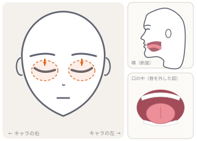
両目を閉じる
上まぶたが下りて、下まぶたと合わさります。まつげやアイラインのパーツも一緒に動かします。
- VRChat
vrc.blink- ARKit
- ＋
eyeBlinkLeft + eyeBlinkRight - UE
EyeClosed, ＋EyeClosedLeft + EyeClosedRight- MMD
まばたき- VRM
blink
VRChat・ARKit 52・Unified Expressions・MMD・VRM の表情キーが、顔のどこをどう動かすのかを Before / After の図でまとめました。
...Left / ...Right の対は Left を描いています（Right は鏡写し）。口は閉じて、目は開いています。VRChat の vrc.v_sil と VRM の neutral はこの形です。
横の断面図の青い線は特殊表情用の隠しパーツです。ハートの目・頬の赤み・涙・縦線などは、ふだんは顔の表面より奥に置いて隠しておき、キーを 1 にしたときに表面の手前まで動かして見せます。
舌のキーは口を閉じたままでも動きます。舌だけが動くキーは右下の「口の中」の図で見てください。

上まぶたが下りて、下まぶたと合わさります。まつげやアイラインのパーツも一緒に動かします。
vrc.blinkeyeBlinkLeft + eyeBlinkRightEyeClosed, ＋EyeClosedLeft + EyeClosedRightまばたきblink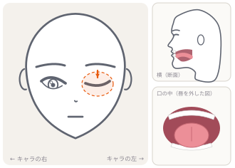
片方の目だけを閉じます。右はこの鏡写しです。MMD の「ウィンク２」は、まぶたをまっすぐ閉じるウィンクです。
eyeBlinkLeft, eyeBlinkRightEyeClosedLeft, EyeClosedRightウィンク２, ｳｨﾝｸ２右blinkLeft, blinkRight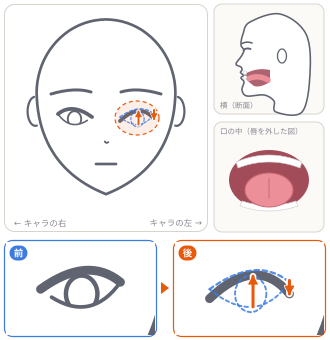
目を ^ の形に閉じます（下まぶたが上がる）。右はこの鏡写しです。
eyeBlinkLeft + eyeSquintLeft + cheekSquintLeftウィンク, ウィンク右両目を ^ の形に閉じます。口は動きません（口まで笑うのは VRM の happy）。
eyeBlink + eyeSquint + cheekSquint（両側）笑い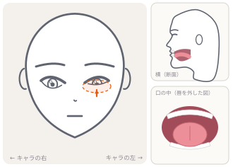
下まぶたが上がって、目が細くなります。上まぶたはほとんど動きません。
eyeSquintLeft, eyeSquintRightEyeSquintLeft, EyeSquintRight, EyeSquint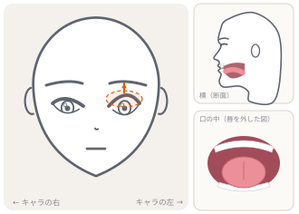
上まぶたが上がり、黒目の上に白目が見えます。MMD の「びっくり」は両目の見開きに、瞳を小さくするのを足したものです。
eyeWideLeft, eyeWideRightEyeWideLeft, EyeWideRight, EyeWideびっくり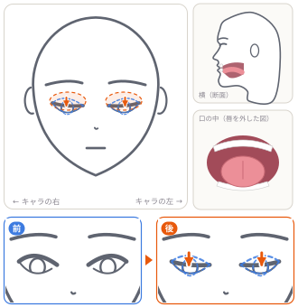
上まぶたが半分まで、まっすぐ下ります。
eyeBlink 0.5 くらい（両側）じと目上まぶたが下がり、目じりも下がった、やわらかい目です。
なごみrelaxed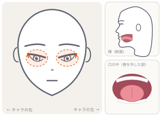
目じりが上がり、上まぶたが少し下りて、鋭い目になります。
ｷﾘｯ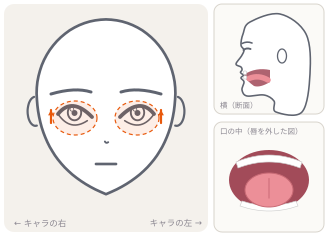
黒目が上へ動き、上まぶたも少し上がります。VRChat の Looking Up は、目のボーンで視線を動かすときに合わせて使う『まぶたの形』です。
vrc.looking_upeyeLookUpLeft + eyeLookUpRightEyeLookUpLeft + EyeLookUpRight（なし）lookUp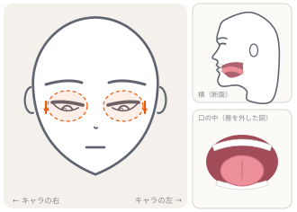
黒目が下へ動き、上まぶたも一緒に下ります。
vrc.looking_downeyeLookDownLeft + eyeLookDownRightEyeLookDownLeft + EyeLookDownRightlookDown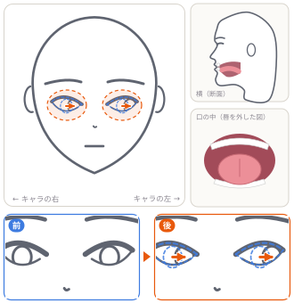
両目の黒目がキャラの左（図の右）へ動きます。左目は外側、右目は内側（鼻の方）へ動くので、ARKit では Out と In の組み合わせです。
eyeLookOutLeft + eyeLookInRightEyeLookOutLeft + EyeLookInRightlookLeft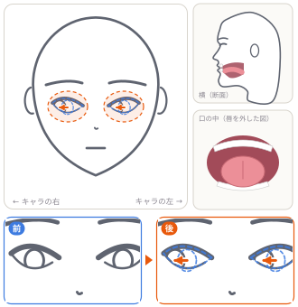
両目の黒目がキャラの右（図の左）へ動きます。
eyeLookInLeft + eyeLookOutRightEyeLookInLeft + EyeLookOutRightlookRight左目の黒目だけが外側（耳の方）へ動きます。右目の eyeLookOutRight は鏡写しです。
eyeLookOutLeft, eyeLookOutRightEyeLookOutLeft, EyeLookOutRight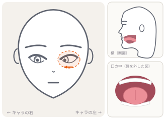
左目の黒目だけが内側（鼻の方）へ動きます。右目の eyeLookInRight は鏡写しです。
eyeLookInLeft, eyeLookInRightEyeLookInLeft, EyeLookInRight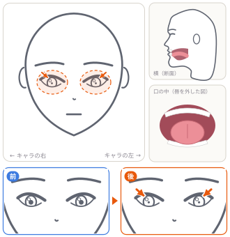
黒目（瞳）を縮めます。白目のまわりは動きません。
EyeConstrictLeft / EyeConstrictRight, EyeConstrict瞳小黒目（瞳）を広げます。
EyeDilationLeft / EyeDilationRight, EyeDilation瞳大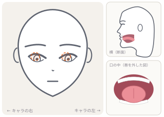
目のハイライト（白い点）のパーツを小さくして、瞳の奥へ隠します。メッシュでなくマテリアルで消すモデルもあります。
ハイライト消し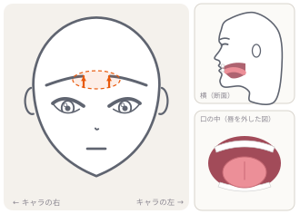
眉の内側（眉間側）が上がり、困ったような眉になります。MMD の「困る」は、外側を少し下げたものです。
browInnerUpBrowInnerUp, ＋BrowInnerUpLeft + BrowInnerUpRight困る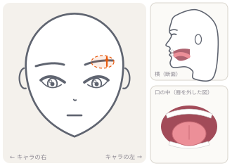
左の眉の外側（目じり側）だけが上がります。
browOuterUpLeft, browOuterUpRightBrowOuterUpLeft, BrowOuterUpRight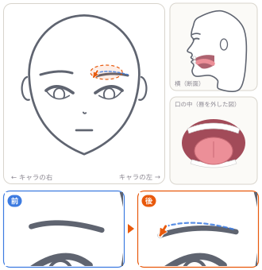
左の眉が下がり、内側が眉間に寄ります。両方を使うと怒った眉になります。
browDownLeft, browDownRightBrowDownLeft, BrowDownRight, ＋BrowLowererLeft + BrowPinchLeft怒り（両方）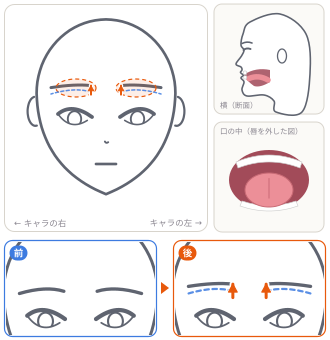
眉全体が上へ動きます。
browInnerUp + browOuterUpLeft + browOuterUpRightBrowUp上眉全体が下がり、まっすぐに近くなります。「真面目」は下げる量が少し小さいものです。
下, ≈真面目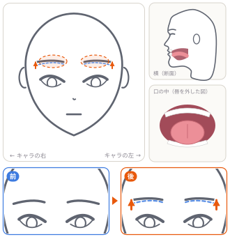
眉が上がって、外側が下がり気味のやわらかい弧になります。
にこり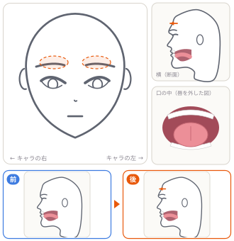
眉が顔の前（手前）へ出ます。正面からはほとんど変わらないので、横の図を見てください。
前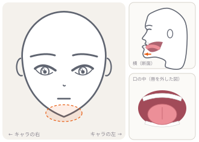
下あごが前へ出ます。正面からはほとんど変わりません。
jawForwardJawForward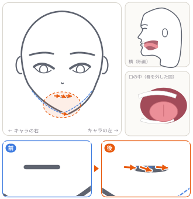
下あごがキャラの左（図の右）へずれます。口も一緒に動きます。
jawLeft, jawRightJawLeft, JawRight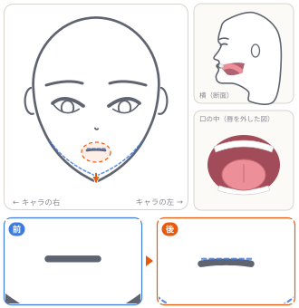
jawOpen と一緒に使うキーで、開いたあごのまま唇だけを閉じます（図は jawOpen 0.5 と一緒）。単独で 1 にすると唇が顔にめりこむことがあります。
mouthCloseMouthClosed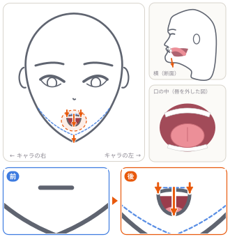
あごが下がって口が大きく開きます。ARKit・UE の jawOpen はあごだけのキーなので、唇の形は他のキーと合わせて作ります。
vrc.v_aajawOpenJawOpen, ≈MouthOpenあaa口が横に広がって、少しだけ開きます。
vrc.v_ihjawOpen + mouthStretch + mouthSmileいih唇をすぼめて前へ出し、少しだけ開きます。
vrc.v_oumouthPucker + mouthFunnelうou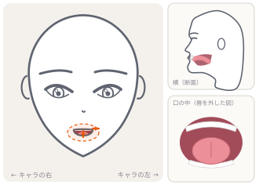
口が横に広がって、「い」より大きく開きます。
vrc.v_ejawOpen + mouthStretchえee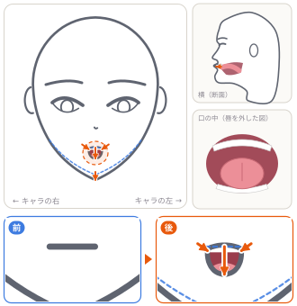
口が丸く縦に開き、唇が少し前へ出ます。
vrc.v_ohjawOpen + mouthFunnelおoh唇を閉じて、上下から押し合わせます。MMD の「ん」もほぼ同じ形です。
vrc.v_ppmouthPressLeft + mouthPressRight + mouthRollん下唇を内側へ巻きこんで、上の歯に当てます。上唇は少し上がります。
vrc.v_ffmouthRollLower + mouthUpperUp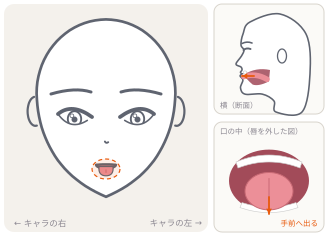
口を少し開けて、舌の先を上下の歯の間から少し出します。
vrc.v_thjawOpen + tongueOut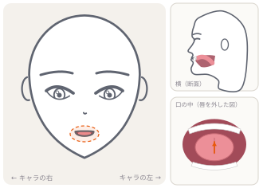
口が少し開いて、少し横に広がります。舌先は上の歯の裏に付きます。
vrc.v_ddjawOpen + mouthStretch口が少し開きます。舌の奥が上がります（口の中なので外からはほとんど見えません）。
vrc.v_kkjawOpen + mouthStretch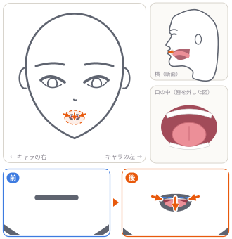
唇を前へ突き出して、四角っぽく少し開きます。
vrc.v_chjawOpen + mouthFunnel + mouthPucker歯を合わせたまま、唇を横に引きます。
vrc.v_ssmouthStretch + mouthSmile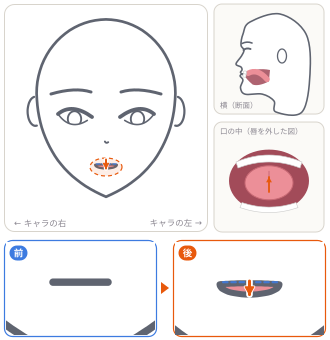
口を少し開けます。舌先は上の歯の裏に付きます。
vrc.v_nnjawOpen + mouthStretch口を少し開けて、唇を少しすぼめます。
vrc.v_rrjawOpen + mouthPucker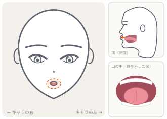
唇を前へ出して、丸く開きます。
mouthFunnelLipFunnel, ＋LipFunnelUpper/Lower Left/Right（4 つ）唇を閉じたまま、小さくすぼめて前へ出します。
mouthPuckerLipPucker, ＋LipPuckerUpper/Lower Left/Right（4 つ）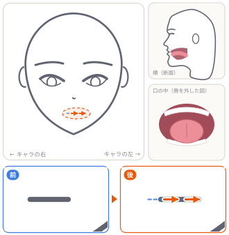
閉じた口が、あごは動かさずにキャラの左（図の右）へずれます。
mouthLeft, mouthRightMouthLeft, ＋MouthUpperLeft + MouthLowerLeft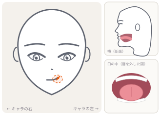
左の口角が上と横へ引かれます。両方を使うと MMD の「口角上げ」になります。
mouthSmileLeft, mouthSmileRightMouthSmileLeft, MouthSmileRight, ＋MouthCornerPullLeft (+ MouthCornerSlantLeft)口角上げ（両方）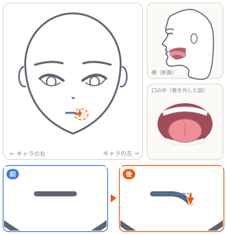
左の口角が下へ引かれます。両方を使うと MMD の「口角下げ」になります。
mouthFrownLeft, mouthFrownRightMouthFrownLeft, MouthFrownRight, ≈MouthSadLeft口角下げ（両方）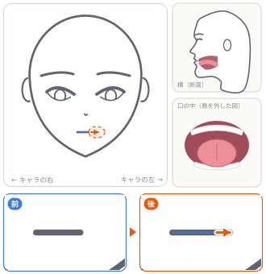
左の口角が真横（少し下）へ引かれます。両方を使うと MMD の「口横広げ」になります。
mouthStretchLeft, mouthStretchRightMouthStretchLeft, MouthStretchRight口横広げ（両方）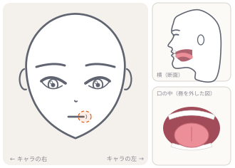
左の口角が後ろ（頬の奥）へ引かれて、少し横に広がります。
mouthDimpleLeft, mouthDimpleRightMouthDimpleLeft, MouthDimpleRight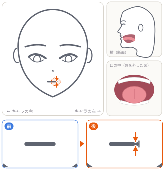
閉じた唇の左側を、上下からぎゅっと押し合わせます。
mouthPressLeft, mouthPressRightMouthPressLeft, MouthPressRight左側の下唇だけが下へ下がり、下の歯が見えます。
mouthLowerDownLeft, mouthLowerDownRightMouthLowerDownLeft, MouthLowerDownRight左側の上唇だけが上へ上がり、上の歯が見えます。
mouthUpperUpLeft, mouthUpperUpRightMouthUpperUpLeft, MouthUpperUpRight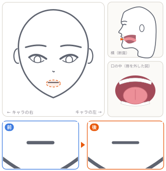
下唇を歯の内側へ巻きこみます。正面からは唇が細く見えるだけなので、横の図を見てください。
mouthRollLowerLipSuckLower, ＋LipSuckLowerLeft + LipSuckLowerRight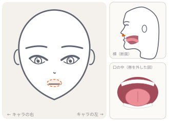
上唇を歯の内側へ巻きこみます。
mouthRollUpperLipSuckUpper, ＋LipSuckUpperLeft + LipSuckUpperRightあご先の筋肉で下唇を押し上げます。への字口や、すねた口に使います。
mouthShrugLowerMouthRaiserLower上唇が上へ押し上げられます。
mouthShrugUpperMouthRaiserUpper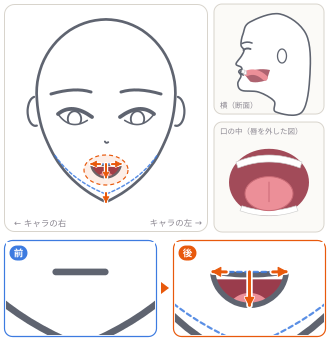
大きく開けて、口角を上げた笑い口です。
jawOpen + mouthStretch + mouthSmileワ三角形に開けた口です。
jawOpen + mouthFunnel + mouthFrown▲閉じた口を ∧ の形（への字）にします。
mouthFrown + mouthShrugLower∧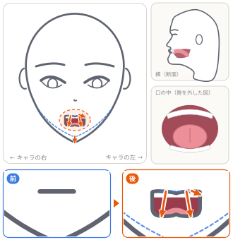
四角く大きく開けた口です（叫ぶとき）。
jawOpen + mouthStretch + mouthUpperUp + mouthLowerDown□閉じた口を ω の形にします（ねこ口）。
mouthSmile + mouthShrugUpperω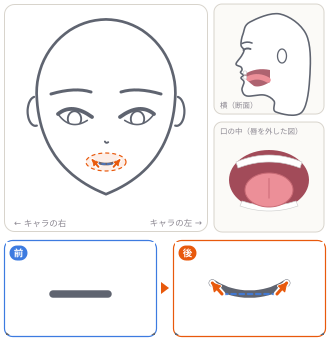
閉じたまま、口角を強く上げて横へ引きます。
mouthSmile + mouthStretch（両側）にやり頬が横と前へふくらみます。
cheekPuffCheekPuff, ＋CheekPuffLeft + CheekPuffRight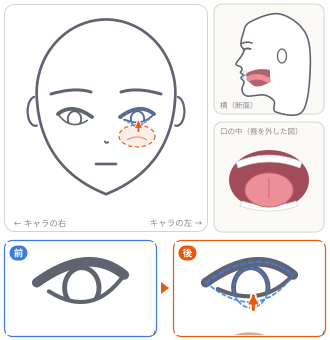
左の頬が上がって、下まぶたを押し上げます。笑ったときの頬です。
cheekSquintLeft, cheekSquintRightCheekSquintLeft, CheekSquintRight, CheekSquint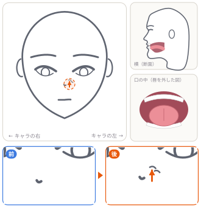
鼻の左わきが上がって、しわができます。上唇も少し上がります。
noseSneerLeft, noseSneerRightNoseSneerLeft, NoseSneerRight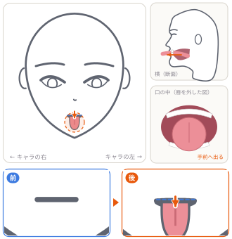
舌が口の外へ出ます。ARKit で舌のキーはこれだけです。MMD の「ぺろっ」は口を少し開けて舌を少し出したものです。
tongueOutTongueOutぺろっ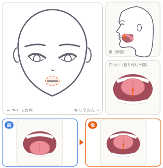
舌の先が上（上の歯の裏）へ上がります。口の外からは見えません。
TongueUp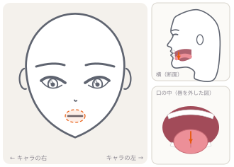
舌の先が下（下の歯の裏）へ下がります。
TongueDown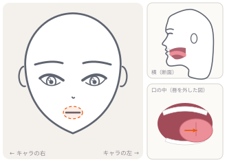
舌がキャラの左（図の右）へ動きます。右はこの鏡写しです。
TongueLeft, TongueRight舌の左右のふちを上げて、筒のように丸めます。
TongueRoll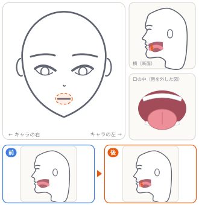
舌の先を下へ曲げます（舌の背が盛り上がる）。
TongueBendDown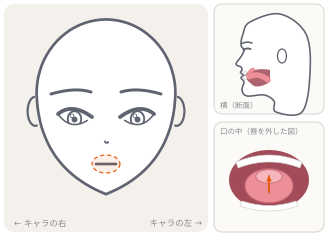
舌の先を上へ反らして、裏側が見えるようにします。
TongueCurlUp舌を前後に縮めて、太く短くします。
TongueSquish舌を薄く、横に広げます。
TongueFlat舌を前後の軸のまわりにねじります。右はこの鏡写しです。
TongueTwistLeft, TongueTwistRight目を ^ の形にして、口角を上げます。
eyeBlink + eyeSquint + cheekSquint + mouthSmile笑い + 口角上げhappy眉を下げて寄せ、目を細め、口角を下げます。
browDown + eyeSquint + mouthFrown怒り + ｷﾘｯ + 口角下げangry眉の内側を上げ、上まぶたを少し下ろし、口角を下げます。
browInnerUp + eyeBlink + mouthFrown困る + 口角下げsad目をやわらかく細め、口角を少し上げます。
なごみ + 口角上げrelaxed目を見開いて眉を上げ、口を開けます。MMD の「びっくり」は目だけです。
eyeWide + browInnerUp + browOuterUp + jawOpenびっくり + 上 + おsurprised頬の赤みと斜線のパーツを、顔の表面のすぐ手前へ出します。ふだんは頭の中に隠してあるパーツを、キーで顔の表面まで動かして見せます（横の図の矢印）。
照れ涙のパーツを目の下へ出します。ふだんは頭の中に隠してあるパーツを、キーで顔の表面まで動かして見せます（横の図の矢印）。
涙瞳の前にハートのパーツを出します（瞳を隠す）。ふだんは頭の中に隠してあるパーツを、キーで顔の表面まで動かして見せます（横の図の矢印）。
はぁと瞳の前に星のパーツを出します。ふだんは頭の中に隠してあるパーツを、キーで顔の表面まで動かして見せます（横の図の矢印）。
星目目を ＞＜ の形にします。まぶたを閉じてから、＞＜ の線のパーツを出すモデルが多いです。
はぅ目を、点のような小さなデフォルメの目にします。形はモデルによって違います。
はちゅ目おでこに縦線のパーツを出します。ふだんは頭の中に隠してあるパーツを、キーで顔の表面まで動かして見せます（横の図の矢印）。
がーん顔の上半分に青い影のパーツを出します。ふだんは頭の中に隠してあるパーツを、キーで顔の表面まで動かして見せます（横の図の矢印）。
青ざめ